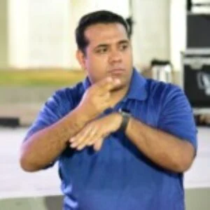
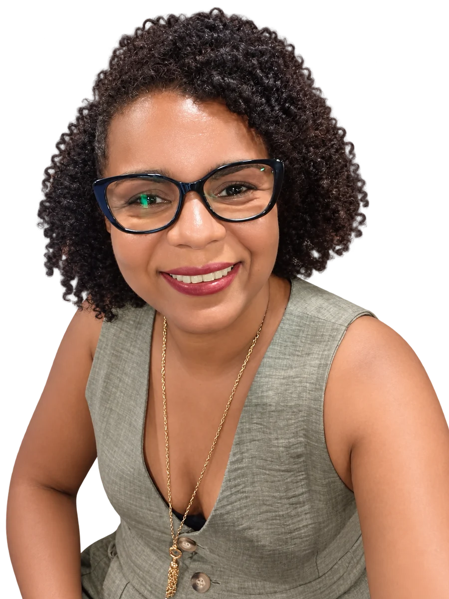
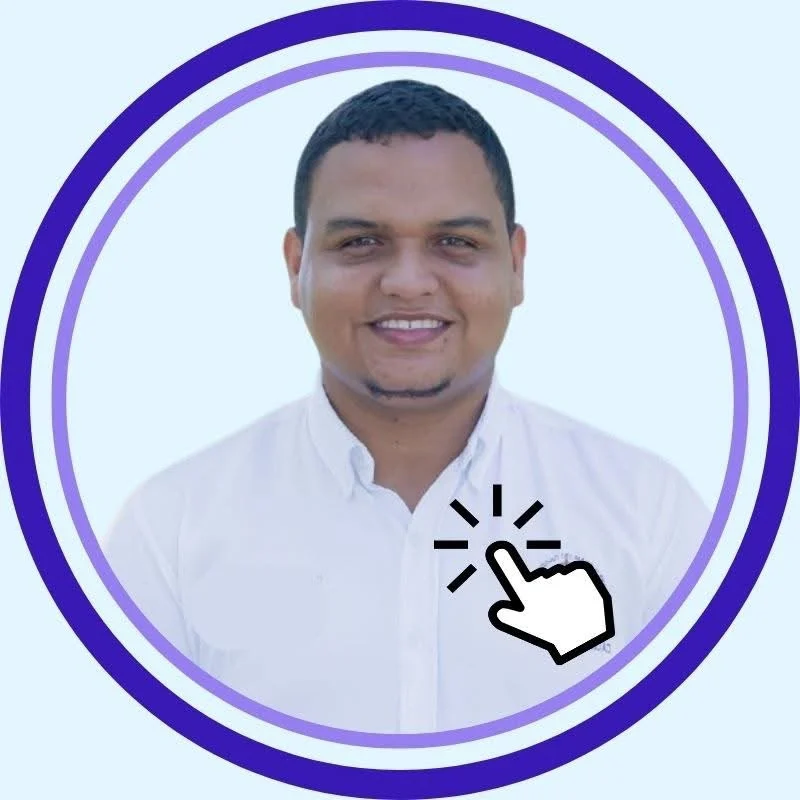
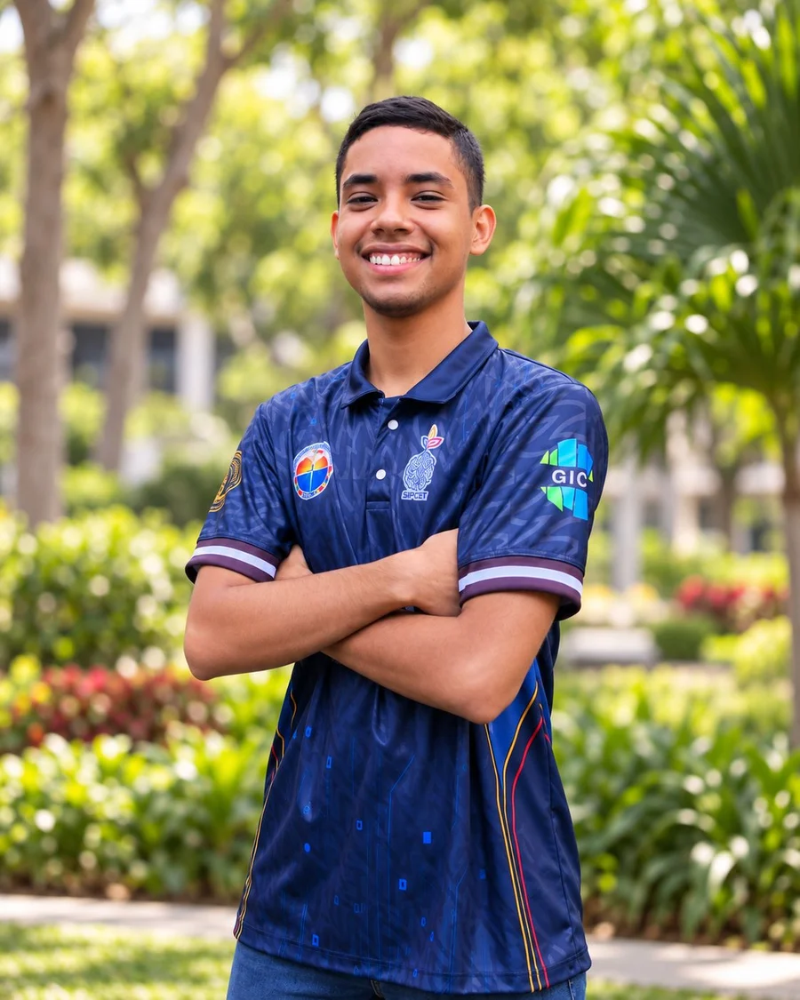
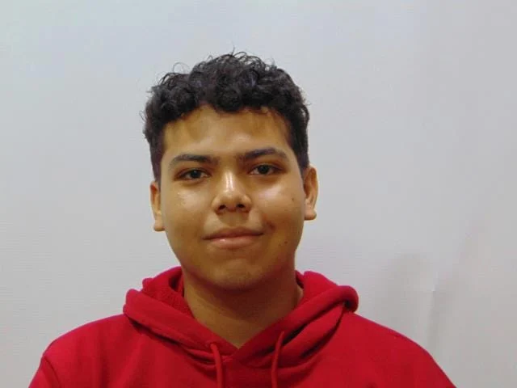
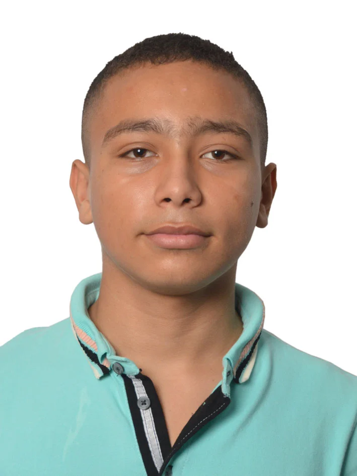
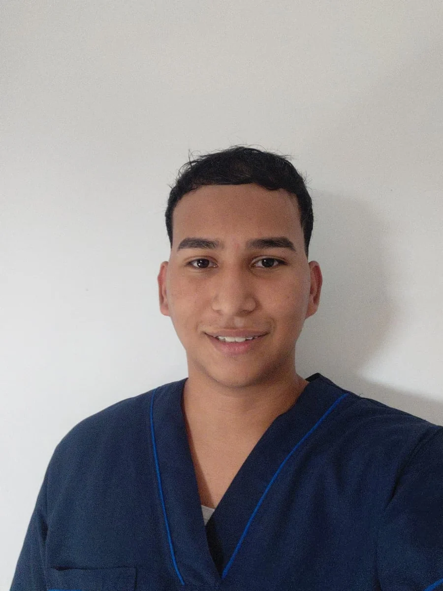
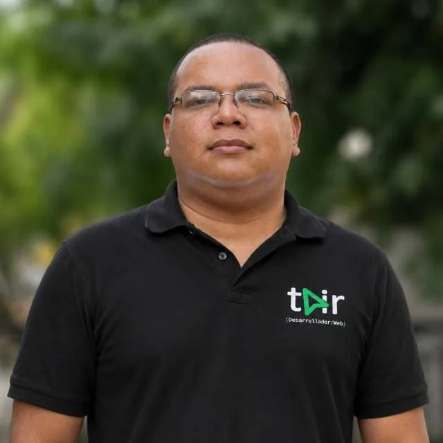

Interpretación LSCEdward Ignacio
Edward Ignacio
Rojas Díaz
Profesor e intérprete de Lengua de Señas Colombiana de EnSeñas.
Conoce su curso en Bloque 10 (se abre en otra pestaña)
El conocimiento se vuelve accesible cuando lo construimos juntos. Estas son las personas que creyeron en EnSeñas y lo hicieron posible.
Su confianza, acompañamiento y conocimiento nos ayudaron a convertir una idea en una experiencia para todos.

Profesor e intérprete de Lengua de Señas Colombiana de EnSeñas.
Conoce su curso en Bloque 10 (se abre en otra pestaña)
Por creer en el proyecto y acompañar su construcción.

Por impulsar esta iniciativa y ayudarnos a sacarla adelante.
Un equipo que une tecnología, educación y compromiso para aprender, explorar y compartir sin barreras.





Distintas miradas, un mismo propósito:
que el conocimiento sea accesible para todos.
Licenciatura en Tecnología · Universidad del Magdalena